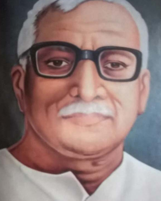

Vanvasi Kalyan Ashram - Founders & Early Leaders

श्री बालासाहब देशपांडे
Shri Balasahab Deshpande
श्री रमाकांत केशव उर्फ़ बालासाहब देशपांडे का जन्म 26 दिसंबर 1913 को अमरावती नगरी में हुआ।
उनके पिताजी का नाम केशवराव देशपांडे एवं माताजी का नाम लक्ष्मीबाई था।
सन 1935 में नागपुर के हिस्लोप कॉलेज से बी.ए., 1937 में एल.एल.बी और 1939 में अर्थशास्त्र में एम.ए. की पढ़ाई पूरी की।
1942 के गाँधी जी के आवाहन पर ‘छोड़ो भारत’ आन्दोलन में रामटेक में सक्रिय भूमिका निभाई।
परिणामतः अंग्रेज सरकार ने बालासाहब को छह महीनों के लिए कारावास में भेजा।

श्री मोरुभाऊ केतकर
Shri Morubhao Ketkar
श्री मोरुभाऊ केतकर का जन्म गणेश चतुर्थी के दिन 1914 में हुआ। इस कारण माता-पिता ने नाम मोरेश्वर रखा।
बाल्यावस्था से ही वे समाज सेवा में सक्रिय रहे। उनका योगदान Vanvasi Kalyan Ashram के विकास में अतुलनीय है।

राजा विजय भूषण सिंह देव
Shri Raja Vijay Bhushan Singh
जशपुर के राजा देव शरण सिंह का असमय निधन होने के पश्चात उनके पुत्र विजय भूषण सिंह देव का
५ वर्ष की आयु में ही राज्याभिषेक किया गया। उन्होंने समाज और जनजातीय कल्याण के क्षेत्र में सक्रिय भूमिका निभाई।

श्री मिश्रीलाल तिवारी
Shri Mishri Lal Tiwari
श्री मिश्रीलाल जी का जन्म मध्य प्रदेश के शाजापुर के मोहल्ला काछीबाड़ा में फाल्गुन शुक्ल
चतुर्दशी के दिन सन 1916 को हुआ। वे शिक्षा और समाज सेवा के क्षेत्र में सक्रिय रहे और Vanvasi
Kalyan Ashram के विभिन्न कार्यों में योगदान दिया।